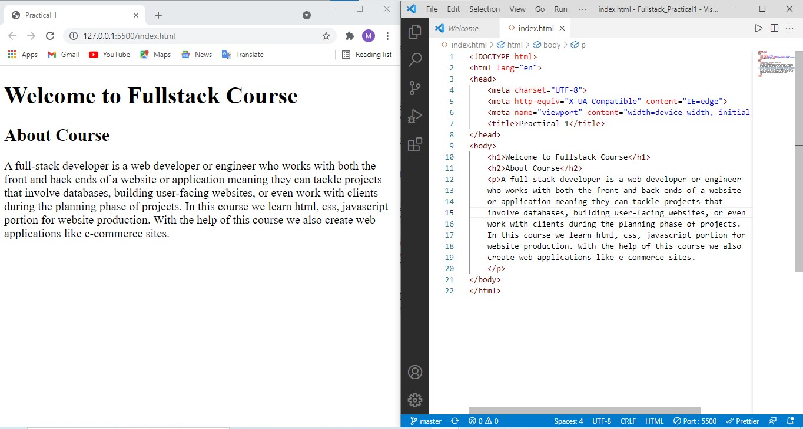

A full-stack developer is a web developer or engineer who works with both the front and back ends of a website or application meaning they can tackle projects that involve databases, building user-facing websites, or even work with clients during the planning phase of projects. In this course we learn html, css, javascript portion for website production. With the help of this course we also create web applications like e-commerce sites.
Offline HTML Editor
Online Sandbox Environment